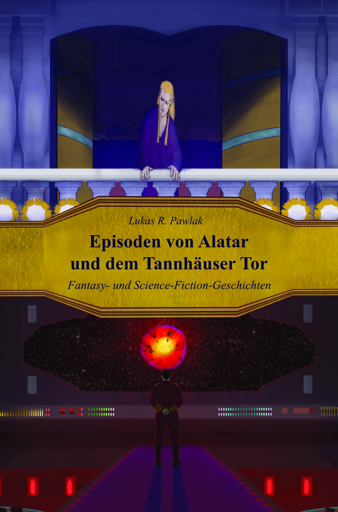

Fantasy · Science-Fiction · 2026
Episoden von Alatar und dem Tannhäuser Tor
Ein Band, zwei Universen: verlorener Krieg, Elfen, Macht und Unterdrückung in Alatar — interstellarer Konflikt, Technologie und Intrigen am Tannhäuser Tor.
↗ Mehr zum Buch